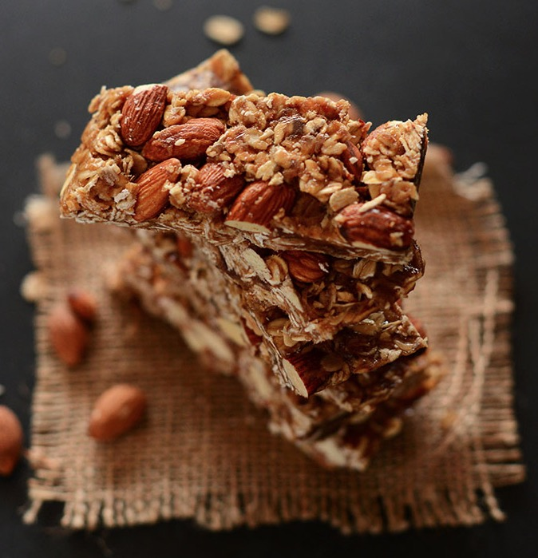
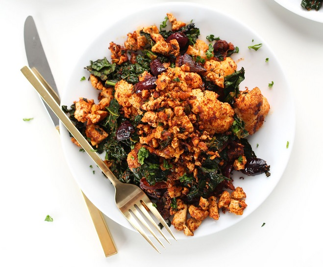

cook smarter
live smarter
smARTfood
Start eating healthy today.
Choose from over 100 healthy, crave-worthy, receipes right in our cookbooks.
Are you new here?
If you’ve haven’t been by before, grab a snack, make yourself comfy and settle in – we are hoping you’ll stay a while. If you feel like exploring, take a look around at the recipe books, events and more!
We show you how to make healthy choices everyday.
Love, Pooja
Check out the sample recipes from our books and events. Try them at home and if you like them, order our cookbooks and attend our events.
HEALTHY 5-INGREDIENT GRANOLA BARS

NUTRITION INFORMATION
Serving size: 1 bar | Calories: 217 Fat: 8 g | Saturated fat: 1 g | Carbohydrates: 31 g | Sugar: 19 g | Fiber: 4 g | Protein: 6 g
INGREDIENTS
- 1 cup packed dates, pitted (deglet nour or medjool)*
- 1/4 cup honey (or sub maple syrup or agave for vegan option)
- 1/4 cup creamy salted natural peanut butter or almond butter
- 1 cup roasted unsalted almonds, loosely chopped
- 1 1/2 cups rolled oats (gluten free for GF eaters)
- optional additions: chocolate chips, dried fruit, nuts, banana chips, vanilla, etc.
INSTRUCTIONS
Process dates in a food processor until small bits remain (about 1 minute). It should form a "dough" like consistency. Optional step: Toast your oats in a 350 degree oven for 15-ish minutes or until slightly golden brown. Otherwise, leave them raw - I just prefer the toasted flavor. Place oats, almonds and dates in a bowl - set aside. Warm honey and peanut butter in a small saucepan over low heat. Stir and pour over oat mixture and then mix, breaking up the dates to disperse throughout. Once thoroughly mixed, transfer to an 8x8 dish or other small pan lined with plastic wrap or parchment paper so they lift out easily. (A loaf pan might work, but will yield thicker bars.) Press down until uniformly flattened. Cover with parchment or plastic wrap, and let set in fridge or freezer for 15-20 minutes to harden. Remove bars from pan and chop into 10 even bars. Store in an airtight container for up to a few days. I kept mine in the freezer to keep them extra fresh, but it isn't necessary.
MASALA SPICED TOFU SCRAMBLE
NUTRITION INFORMATION
Serving size: 1/2 recipe | Calories: 404 | Fat: 29g | Saturated fat: 4.5g | Carbohydrates: 29g | Sugar: 6.4g | Sodium: 700mg | Fiber: 9g | Protein: 16.7g
INGREDIENTS
- 3-4 Tbsp grape seed oil (or sub olive oil or melted coconut oil)
- 1 head cauliflower, de-stemmed and roughly chopped
- 1/2 red onion, thick sliced
- ~1/3 cup tandoori masala spice blend, divided (see notes for DIY blend / where to buy)
- Salt and Pepper
- 3 large handfuls lacinato kale, chopped
- 1/4 cup kalamata olives, pitted and halved
- 8 ounces extra firm tofu, pressed dry
- 1/4 cup fresh parsley, finely chopped (optional)
INSTRUCTIONS
Preheat oven to 400 degrees and wrap tofu in a clean, absorbent towel and set something heavy on top (like a cast iron skillet or tea pot) to begin drying. Add chopped onion and cauliflower to a large mixing bowl with 2 Tbsp oil, 3 Tbsp masala spice blend and a healthy pinch each salt and pepper and toss to combine. You want it very heavily seasoned - almost all visibly coated (see photo) - so add more spice if necessary. Add to a lightly greased or foil lined baking sheet and bake for 20 minutes. In the meantime, add kale to the mixing bowl you used before and toss with another dash of oil and a shake of masala spice and salt and pepper. Massage to coat. At the 20 minute mark, stir cauliflower and onion to cook evenly and add the kale to one end of the baking sheet. Bake for 5 minutes more. Move onto the tofu while veggies are baking: Preheat large skillet to medium, medium-high heat. While heating, to the same mixing bowl you used before, add the tofu and use a fork to piece it apart. Add chopped olives, 1 Tbsp oil and another healthy shake (~ 1 heaping Tbsp) masala blend and salt and pepper. Optional: I also added a dash of hot sauce for color. If using parsley, add half at this time for color and reserve the rest for garnish/serving. Once the pan is hot, add a bit more oil and then the tofu mixture. Continue cooking and stirring (adding more masala if desired) for about 5 minutes, or until it looks visibly browned and dry. To serve, place the cauliflower/kale/onion mixture on the serving plates and top with tofu scramble. Garnish with a bit more fresh parsley and serve with hot sauce and breakfast potatoes, if desired. Although, I think it’s perfect on its own. Store leftovers in the fridge, covered for up to 2 days, though best when fresh.